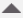

Insert Logos
Insert Logos
- You have selected an existing report definition in System Browser > Reports or you have created a report definition and now want to configure it.
- Click the Home tab.
- From the Insert group box, click the Logo group box and select Manage Logo.
- The Manage Logo dialog box displays.
- Click Browse.
- Select an image file, preferably in the format: .bmp, .jpeg, .png, or .gif. You must ensure that the size of the image file does not exceed 1MB.
- Click Open.
- The Select logo to upload field displays the file path. You cannot edit this field. The image file name is saved as the logo name.
- Click Upload.
- The image is added to the Available Logos list and the logo file is saved under: [Installation Drive]:\[Installation Folder]\[Project Name]\data\Reporting\Logos.
You can now proceed to inserting a logo. - Perform either of the following steps to insert a logo.
- From the Insert group box, click the Logo group box and select a logo, and then drag it onto the report definition where you want to insert it.
- In the report definition, place the cursor where you want to insert the logo, right-click and select the required logo from the Insert Logo option.
- The logo is inserted in the report definition.

NOTE 1:
You can change the position of the logo in the report definition by using the Move buttons (up

, down , top , bottom ) in the Placement group box of the Layout tab, or by right-clicking a logo in the report definition, and selecting Move.NOTE 2:
To delete a logo, click the logo and press DELETE. You delete a logo from the source directory using the Manage Logo command in the Logo group box. When a logo is deleted from the source directory, the no parking symbol displays in the report definition (in place of the logo) with a tooltip that displays
Logo is deleted or renamed from the source directory. Any subsequent execution of the report definition does not display anything in the PDF or XLS.